2 Upstream data processing
To perform multiple analysis with Tidymass shinyapp, you need to upload files first, the demo data can be downloaded through Google Drive or BaiduNetdisk.

2.1 Data format converter
If your data is in raw format, you may first convert it to .mzML or .mzXML format using ProteoWizard. Please note that ProteoWizard only support Windows OS, you may consider massconverter if you don’t use Windows OS.
You can refer to the following parameter settings for ProteoWizard.

2.2 Methods to upload the files
To begin with, you need to set up the working directory and upload the required files. Here we provide three options to do that.
Start with Ms file: If you have raw data in the format like .mzML or mzXML. You can click on ‘Start with Ms file’ to upload the file.
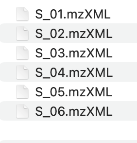
Start with table file: If your data is a post-peak metabolite expression matrix, you can click on the ‘Start with table file’ button to upload the data. The sample table is as follows, and the first four columns must exist, with column names not to be changed.

Start with massdataset object: If your data is generated by Tidymass, you can choose the ‘Start with massdataset object’ button and directly upload them.

2.3 Project initiate
Here are the steps you need to follow to initiate the project:
- Set working directory
- Upload
sample_info.csvfile - You may click the dropdown button and adjust the column names if there are any changes for them.
- Click “Initialize Project” button and check the sample information.

2.4 Data import
Upload Ms file
Before importing the data, please make sure the files are properly organized according to sample type, such as QC and Subject. Here is an example:

Click the dropdown button Data import and select Start with MS file.

Then click SELECT MS1 FOLDER and choose the MS1 folder.

Next, click CHECK INPUT FILE and a prompt will appear if the files have been successfully uploaded.
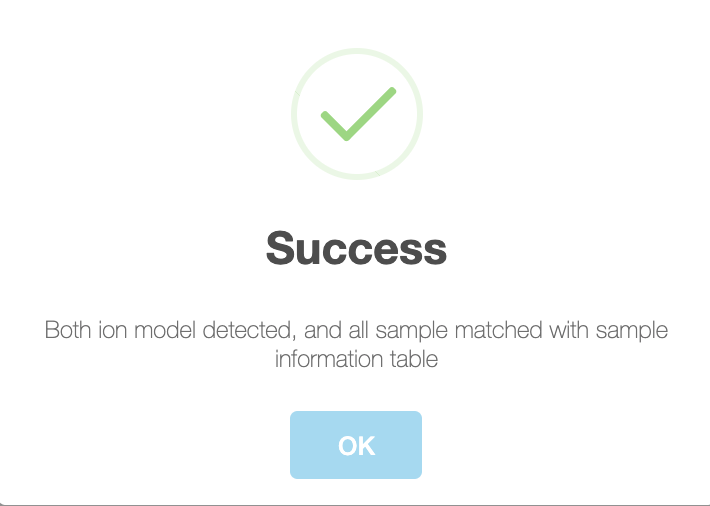
After the files are ready for analysis, you can choose to set peak picking parameters yourself. Here are some important parameters:
- ppm: Peak detection ppm.
- peakwidth: Peak width. It is dependent on your column and LC system.
- snthresh: Signal to noise threshold.
- noise: Noise cutoff.
- threads: The core number for performing.
For more details, please refer to massprocesser.
If you want to use the recommended parameters, just click Start to proceed with further optimization. This will find the best ppm cutoff and run with it to perform the optimization.
Finally, click Start peak picking and get the results.
Upload table file
Click the dropdown button Data import and select Start with table file.

Then click BROWSE and select the csv table. Next, click INPUT FILE SUMMARY and you will see the statistics of input file, such as QC Samples, Subject Samples and Total Features.
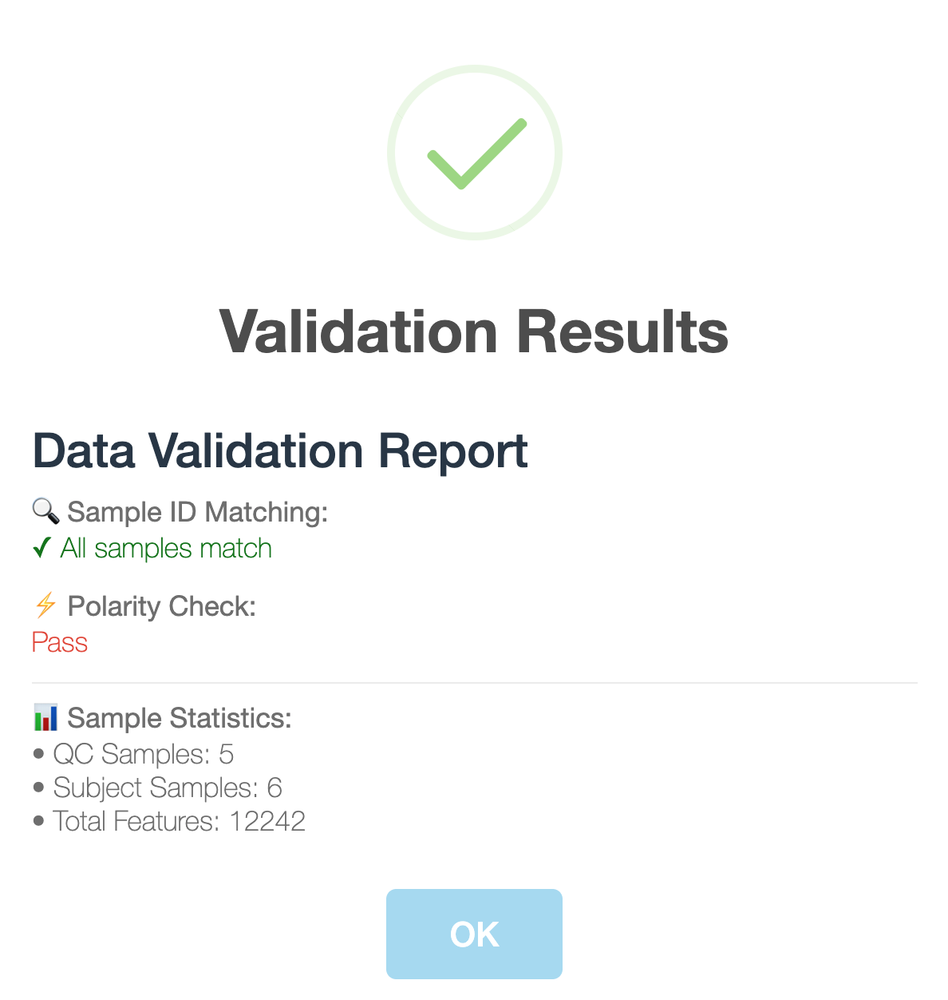
If all the check have passed, click Generate massdataset object to obtain massdataset objects for both positive and negative modes.

Upload mass_dataset file
If you already have massdataset objects generated by Tidymass, you can simply upload them. Upload objects for positive and negative modes separately and click Check input

2.5 Data quaily assessment
To have an overall understanding and assessment about the data, you can select Overview and click START to generate multiple plots, including peak distribution, missing value summary and missing value in samples etc.
Here you can also adjust parameters and download these plots.
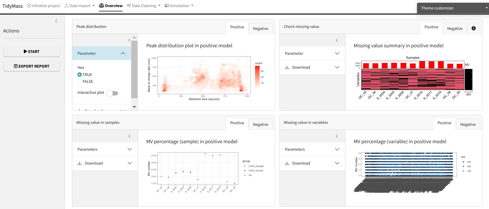
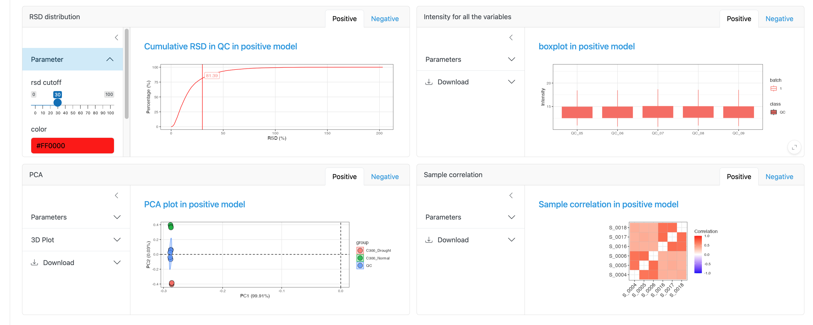
2.6 Data cleaning
Before metabolite annotation, it’s necessary to perform data cleaning as various bias may exist in sample preparation and data acquisition. It can be divided into different steps such as noisy feature removal and outlier samples removal. For more details, please refer to masscleaner.
Remove noisy metabolic features
The first step is removing noisy metabolic features. Here we choose to remove variables who have MV in more than 20% QC samples and in at lest 50% samples in control group or case group, so the MV cutoff of QC samples (%) has been set as 20 and MV cutoff (%) has been set as 50.
Click Start to remove these noisy metabolites.
Next, you can visualize the MV percentage of samples for QC group, Subject group or both of them by click Show plot.
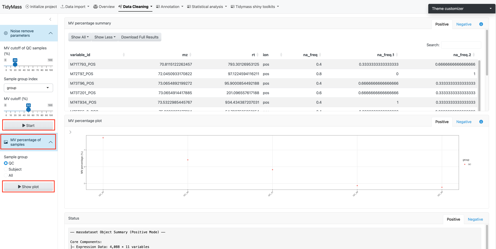
Filter outlier samples
When analyzing large cohorts, outlier samples can be a serious problem. In this step, we will filter these outlier samples.
Before filtering outlier samples, you can click Start above to show the plot for Missing value in samples and PCA plot.
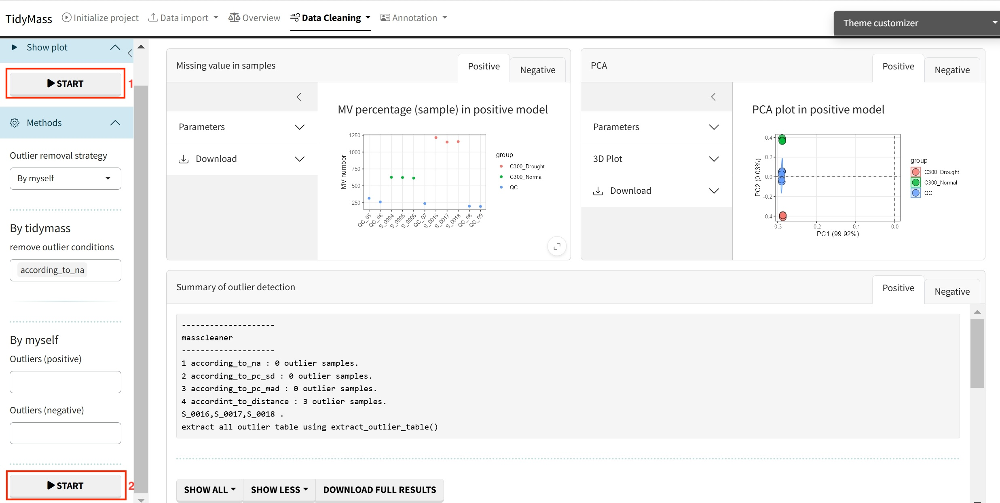
In Tidymass shinyapp, we provide multiple options to filter outliers, you may select different strategies according to your requirement. For more information, please refer to this blog.
For “By tidymass” strategy, four remove outlier conditions are provided: according to NA (according_to_na), accoriding to standard deviation for principal component (pc_sd), according to mean abosolute deviation for principal component (pc_mad) and according to distance (according_to_distance).
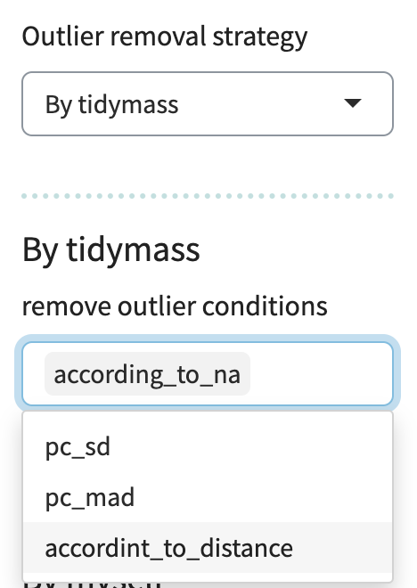
For “By myself” strategy, the outliers for both positive and negative modes are set to be “none”.
Click Start below to filter outlier samples.
Missing value imputation
Here you can select many different methods for missing value imputation, including knn, missforest (mf) and ppca etc.
Parameters
For knn
- k: the parameters can be modified include number of neighbors. Defaults to 10.
- rowmax: maximum row missing proportion. Defaults to 0.5.
- colmax: maximum column missing proportion. Defaults to 0.8.
- maxp: maximum prediction proportion. Defaults to 1500.
- rng.seed: random number generator seed.
For missForest (rf)
- maxiter: the parameters include maximum iterations. Defaults to 10.
- ntree: number of trees. Defaults to 100.
- decreasing: whether to interpolate missing values in order from most to least number of missing values. Defaults to FALSE.
For ppca
- nPcs: the parameters can be modified include number of principal components. Defaults to 2.
- maxSteps: maximum steps for iterations. Defaults to 100.
- threshold: convergence threshold. Defaults to 1e-04.
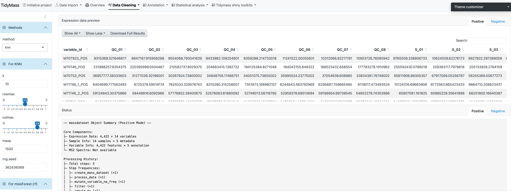
If the method has been chosen and all the parameters have been set, click START to perform missing value imputation.
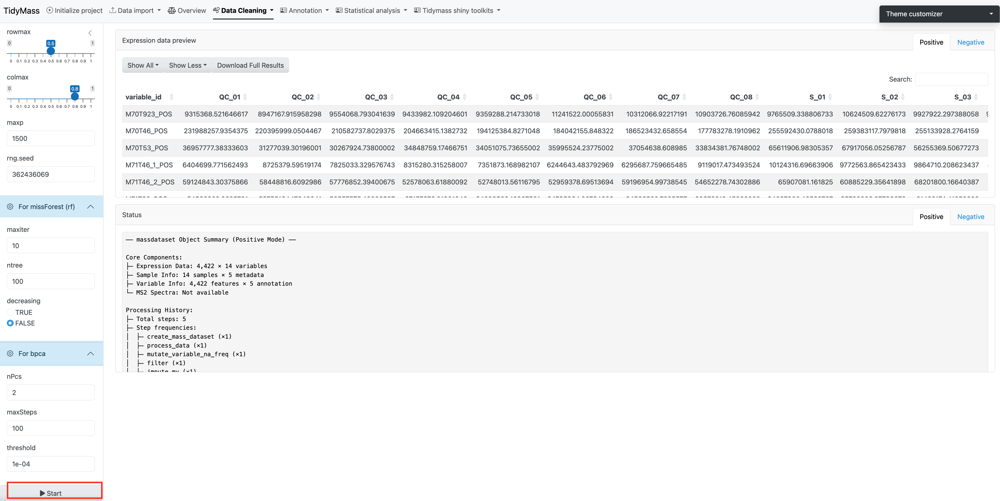
Data normalization and integration
To remove unwanted analytical variations and integrate multiple batches forming an integral data set for subsequent statistical analysis, we need to perform data normalization and integration.
Here we provide several methods to be selected, including QC sample-based data normalization like svr and loess and sample-wise method like pqn, median, mean and total intensity normalization.
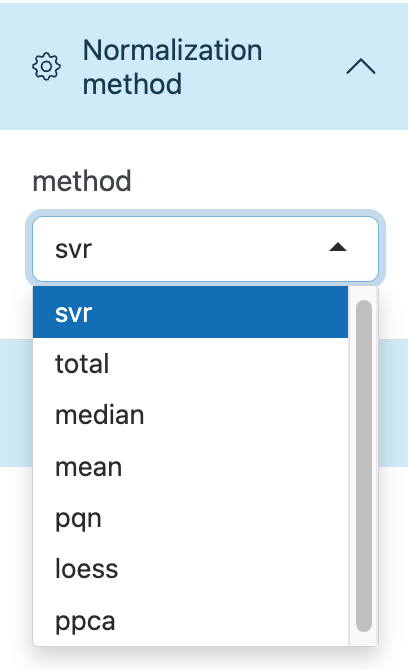
Parameters
- keep_scale: whether to keep the original scale of the data during the data standardization process. Defaults to TRUE.
- optimization: whether to enable optimization steps in the standardization process. Defaults to TRUE.
- pqn_reference: the reference value selected for using the Probabilistic Quotient Normalization method. Defaults to median.
- begin_value: the start value for parameter search range. Defaults to 0.5.
- end_value: the end value for parameter search range. Defaults to 1.
- step_value: the increment at each step of the parameter search. Defaults to 0.2.
- multiple: the standardized factors used to control multiples. Defaults to 1.
- threads: the number of threads for normalization. Defaults to 1.
Click Start analysis to perform the normalization and integration. Then click Show plot to visualize the difference before and after the normalization.
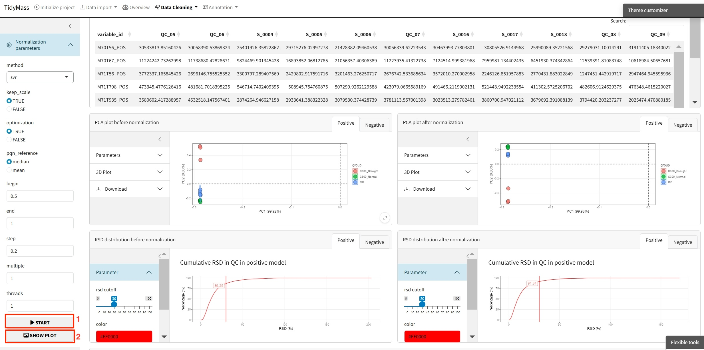